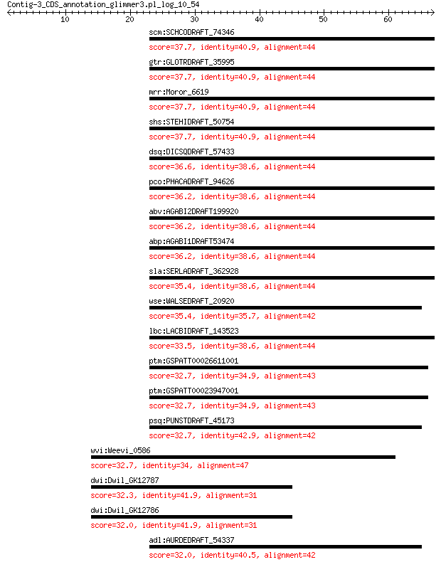

bitscore colors: <40, 40-50 , 50-80, 80-200, >200
 BLASTP 2.2.31+
Reference: Stephen F. Altschul, Thomas L. Madden, Alejandro A.
Schaffer, Jinghui Zhang, Zheng Zhang, Webb Miller, and David J.
Lipman (1997), "Gapped BLAST and PSI-BLAST: a new generation of
protein database search programs", Nucleic Acids Res. 25:3389-3402.
Reference for composition-based statistics: Alejandro A. Schaffer,
L. Aravind, Thomas L. Madden, Sergei Shavirin, John L. Spouge, Yuri
I. Wolf, Eugene V. Koonin, and Stephen F. Altschul (2001),
"Improving the accuracy of PSI-BLAST protein database searches with
composition-based statistics and other refinements", Nucleic Acids
Res. 29:2994-3005.
Database: all_orgs
14,240,465 sequences; 5,121,972,263 total letters
Query= Contig-3_CDS_annotation_glimmer3.pl_log_10_54
Length=66
Score E
Sequences producing significant alignments: (Bits) Value
scm:SCHCODRAFT_74346 hypothetical protein 37.7 0.13
gtr:GLOTRDRAFT_35995 kinase-like protein 37.7 0.13
mrr:Moror_6619 cmgc dyrk dyrk2 protein kinase 37.7 0.13
shs:STEHIDRAFT_50754 kinase-like protein 37.7 0.13
dsq:DICSQDRAFT_57433 kinase-like protein 36.6 0.27
pco:PHACADRAFT_94626 hypothetical protein 36.2 0.37
abv:AGABI2DRAFT199920 AGABI2DRAFT_199920; hypothetical protein 36.2 0.38
abp:AGABI1DRAFT53474 AGABI1DRAFT_53474; hypothetical protein 36.2 0.38
sla:SERLADRAFT_362928 hypothetical protein 35.4 0.62
wse:WALSEDRAFT_20920 kinase-like protein 35.4 0.66
lbc:LACBIDRAFT_143523 hypothetical protein 33.5 2.1
ptm:GSPATT00026611001 hypothetical protein 32.7 4.2
ptm:GSPATT00023947001 hypothetical protein 32.7 4.2
psq:PUNSTDRAFT_45173 hypothetical protein 32.7 5.3
wvi:Weevi_0586 xenobiotic-transporting ATPase (EC:3.6.3.44) 32.7 5.4
dwi:Dwil_GK12787 GK12787 gene product from transcript GK12787-RA 32.3 7.2
dwi:Dwil_GK12786 GK12786 gene product from transcript GK12786-RA 32.0 8.4
adl:AURDEDRAFT_54337 kinase-like protein 32.0 9.2
> scm:SCHCODRAFT_74346 hypothetical protein
Length=838
Score = 37.7 bits (86), Expect = 0.13, Method: Compositional matrix adjust.
Identities = 18/44 (41%), Positives = 25/44 (57%), Gaps = 3/44 (7%)
Query 23 LWSFGHKTLILIQLAVFFNIFRSNNRQKSLTTIEELITVPDKTW 66
+WS G IL +L F IF N Q+ L+ I E++ VPDK +
Sbjct 629 MWSLG---CILAELYTGFPIFPGENEQEQLSCIMEVLGVPDKDF 669
> gtr:GLOTRDRAFT_35995 kinase-like protein
Length=561
Score = 37.7 bits (86), Expect = 0.13, Method: Compositional matrix adjust.
Identities = 18/44 (41%), Positives = 25/44 (57%), Gaps = 3/44 (7%)
Query 23 LWSFGHKTLILIQLAVFFNIFRSNNRQKSLTTIEELITVPDKTW 66
+WS G IL +L F IF N Q+ L+ I E++ VPDK +
Sbjct 342 MWSLG---CILAELYTGFPIFPGENEQEQLSCIMEVLGVPDKDF 382
> mrr:Moror_6619 cmgc dyrk dyrk2 protein kinase
Length=1760
Score = 37.7 bits (86), Expect = 0.13, Method: Compositional matrix adjust.
Identities = 18/44 (41%), Positives = 25/44 (57%), Gaps = 3/44 (7%)
Query 23 LWSFGHKTLILIQLAVFFNIFRSNNRQKSLTTIEELITVPDKTW 66
+WS G IL +L F IF N Q+ L+ I E++ VPDK +
Sbjct 1544 MWSLG---CILAELYTGFPIFPGENEQEQLSCIMEVLGVPDKEF 1584
> shs:STEHIDRAFT_50754 kinase-like protein
Length=932
Score = 37.7 bits (86), Expect = 0.13, Method: Compositional matrix adjust.
Identities = 18/44 (41%), Positives = 25/44 (57%), Gaps = 3/44 (7%)
Query 23 LWSFGHKTLILIQLAVFFNIFRSNNRQKSLTTIEELITVPDKTW 66
+WS G IL +L F IF N Q+ L+ I E++ VPDK +
Sbjct 704 MWSLG---CILAELYTGFPIFPGENEQEQLSCIMEVLGVPDKEF 744
> dsq:DICSQDRAFT_57433 kinase-like protein
Length=850
Score = 36.6 bits (83), Expect = 0.27, Method: Compositional matrix adjust.
Identities = 17/44 (39%), Positives = 24/44 (55%), Gaps = 3/44 (7%)
Query 23 LWSFGHKTLILIQLAVFFNIFRSNNRQKSLTTIEELITVPDKTW 66
+WS G I+ +L F IF N Q+ L I E++ VPDK +
Sbjct 620 MWSLG---CIMAELYTGFPIFPGENEQEQLACIMEVLGVPDKDF 660
> pco:PHACADRAFT_94626 hypothetical protein
Length=483
Score = 36.2 bits (82), Expect = 0.37, Method: Compositional matrix adjust.
Identities = 17/44 (39%), Positives = 25/44 (57%), Gaps = 3/44 (7%)
Query 23 LWSFGHKTLILIQLAVFFNIFRSNNRQKSLTTIEELITVPDKTW 66
+WS G I+ +L F IF N Q+ L+ I E++ VPDK +
Sbjct 256 MWSLG---CIMAELYTGFPIFPGENEQEQLSCIMEVLGVPDKDF 296
> abv:AGABI2DRAFT199920 AGABI2DRAFT_199920; hypothetical protein
Length=600
Score = 36.2 bits (82), Expect = 0.38, Method: Compositional matrix adjust.
Identities = 17/44 (39%), Positives = 25/44 (57%), Gaps = 3/44 (7%)
Query 23 LWSFGHKTLILIQLAVFFNIFRSNNRQKSLTTIEELITVPDKTW 66
+WS G IL +L + IF N Q+ L+ I E++ VPDK +
Sbjct 387 MWSLG---CILAELHTGYPIFPGENEQEQLSCIMEVLGVPDKDF 427
> abp:AGABI1DRAFT53474 AGABI1DRAFT_53474; hypothetical protein
Length=600
Score = 36.2 bits (82), Expect = 0.38, Method: Compositional matrix adjust.
Identities = 17/44 (39%), Positives = 25/44 (57%), Gaps = 3/44 (7%)
Query 23 LWSFGHKTLILIQLAVFFNIFRSNNRQKSLTTIEELITVPDKTW 66
+WS G IL +L + IF N Q+ L+ I E++ VPDK +
Sbjct 387 MWSLG---CILAELHTGYPIFPGENEQEQLSCIMEVLGVPDKDF 427
> sla:SERLADRAFT_362928 hypothetical protein
Length=532
Score = 35.4 bits (80), Expect = 0.62, Method: Compositional matrix adjust.
Identities = 17/44 (39%), Positives = 24/44 (55%), Gaps = 3/44 (7%)
Query 23 LWSFGHKTLILIQLAVFFNIFRSNNRQKSLTTIEELITVPDKTW 66
+WS G IL +L F IF N Q+ L+ I E++ PDK +
Sbjct 297 MWSLG---CILAELYTGFPIFPGENEQEQLSCIMEVLGAPDKEF 337
> wse:WALSEDRAFT_20920 kinase-like protein
Length=577
Score = 35.4 bits (80), Expect = 0.66, Method: Compositional matrix adjust.
Identities = 15/42 (36%), Positives = 25/42 (60%), Gaps = 3/42 (7%)
Query 23 LWSFGHKTLILIQLAVFFNIFRSNNRQKSLTTIEELITVPDK 64
+WSFG IL++L + IF N Q+ L + E++ +P+K
Sbjct 348 MWSFG---AILVELYTGYPIFPGENEQEQLACLMEILGIPEK 386
> lbc:LACBIDRAFT_143523 hypothetical protein
Length=366
Score = 33.5 bits (75), Expect = 2.1, Method: Composition-based stats.
Identities = 17/44 (39%), Positives = 25/44 (57%), Gaps = 3/44 (7%)
Query 23 LWSFGHKTLILIQLAVFFNIFRSNNRQKSLTTIEELITVPDKTW 66
+WS G IL +L F IF N Q+ L+ I E++ +PDK +
Sbjct 240 MWSLG---CILAELYTGFPIFPGENEQEQLSCIMEVLGIPDKEF 280
> ptm:GSPATT00026611001 hypothetical protein
Length=613
Score = 32.7 bits (73), Expect = 4.2, Method: Compositional matrix adjust.
Identities = 15/43 (35%), Positives = 25/43 (58%), Gaps = 3/43 (7%)
Query 23 LWSFGHKTLILIQLAVFFNIFRSNNRQKSLTTIEELITVPDKT 65
+WSFG I+ +L + + IF N Q+ + I E+ VPD++
Sbjct 383 MWSFG---CIMAELYIGYPIFPGENEQEQIAYIMEVKGVPDQS 422
> ptm:GSPATT00023947001 hypothetical protein
Length=613
Score = 32.7 bits (73), Expect = 4.2, Method: Compositional matrix adjust.
Identities = 15/43 (35%), Positives = 25/43 (58%), Gaps = 3/43 (7%)
Query 23 LWSFGHKTLILIQLAVFFNIFRSNNRQKSLTTIEELITVPDKT 65
+WSFG I+ +L + + IF N Q+ + I E+ +PD+T
Sbjct 383 MWSFG---CIMAELYIGYPIFPGENEQEQIAYIMEVKGLPDQT 422
> psq:PUNSTDRAFT_45173 hypothetical protein
Length=1912
Score = 32.7 bits (73), Expect = 5.3, Method: Composition-based stats.
Identities = 18/42 (43%), Positives = 24/42 (57%), Gaps = 3/42 (7%)
Query 23 LWSFGHKTLILIQLAVFFNIFRSNNRQKSLTTIEELITVPDK 64
+WS G IL +L F IF N Q+ L+ I E++ VPDK
Sbjct 1699 MWSLG---CILAELYTGFPIFPGENEQEQLSCIMEVLGVPDK 1737
> wvi:Weevi_0586 xenobiotic-transporting ATPase (EC:3.6.3.44)
Length=586
Score = 32.7 bits (73), Expect = 5.4, Method: Composition-based stats.
Identities = 16/50 (32%), Positives = 31/50 (62%), Gaps = 3/50 (6%)
Query 14 RTMQQKNRHLWSFGHKTLI---LIQLAVFFNIFRSNNRQKSLTTIEELIT 60
+ +Q+ N+ LW++ K +I LI + + N+F N K+L +++EL+T
Sbjct 2 KALQKLNKFLWNYKWKLIIGFFLIICSNYVNVFSINYIGKALNSVQELLT 51
> dwi:Dwil_GK12787 GK12787 gene product from transcript GK12787-RA
Length=673
Score = 32.3 bits (72), Expect = 7.2, Method: Composition-based stats.
Identities = 13/31 (42%), Positives = 21/31 (68%), Gaps = 4/31 (13%)
Query 14 RTMQQKNRHLWSFGHKTLILIQLAVFFNIFR 44
R+MQ K++ +WSFG L+ ++ FN+FR
Sbjct 329 RSMQSKSKKVWSFGQYFLLFVK----FNVFR 355
> dwi:Dwil_GK12786 GK12786 gene product from transcript GK12786-RA
Length=1494
Score = 32.0 bits (71), Expect = 8.4, Method: Compositional matrix adjust.
Identities = 13/31 (42%), Positives = 21/31 (68%), Gaps = 4/31 (13%)
Query 14 RTMQQKNRHLWSFGHKTLILIQLAVFFNIFR 44
R+MQ K++ +WSFG L+ ++ FN+FR
Sbjct 300 RSMQSKSKEVWSFGQYFLLFVK----FNVFR 326
> adl:AURDEDRAFT_54337 kinase-like protein
Length=475
Score = 32.0 bits (71), Expect = 9.2, Method: Composition-based stats.
Identities = 17/42 (40%), Positives = 23/42 (55%), Gaps = 3/42 (7%)
Query 23 LWSFGHKTLILIQLAVFFNIFRSNNRQKSLTTIEELITVPDK 64
+WS G IL +L + IF N Q+ L I E++ VPDK
Sbjct 253 MWSLG---CILAELYTGYPIFPGENEQEQLACIMEVLGVPDK 291
Lambda K H a alpha
0.323 0.129 0.396 0.792 4.96
Gapped
Lambda K H a alpha sigma
0.267 0.0410 0.140 1.90 42.6 43.6
Effective search space used: 128263368604